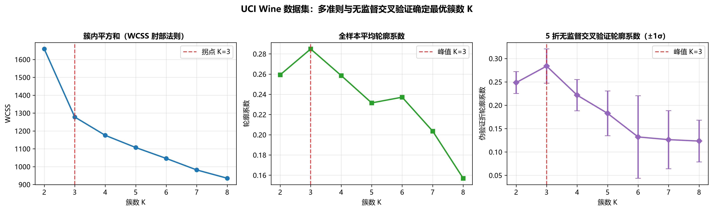

① 代表样本抽样（7.4.1）
从每个簇抽取离质心最近的原型样本（Prototypes），用领域直觉检查“它们在现实中真的是一类吗？”
② 跨簇特征分布对比
绘制各簇在每个特征上的均值热力图、箱线图或雷达图，精准定位是谁区分了不同簇。
③ 二维降维投影（PCA）
投影到前两个主成分着色观察分离度（注意：2D 重叠不代表高维不可分，仅作辅助视图）。

图 4：UCI Wine 最终三类簇的 13 维化学特征画像热力图——簇1(清爽淡雅低酒精度) / 簇2(高色度高苹果酸低酚) / 簇3(高脯氨酸高类黄酮醇厚型)
VDS 7.7.1 无监督 V 折交叉验证流程：
数据分 V 折 → 在 V−1 折训练折上跑聚类得簇中心 → 将留出的伪验证折样本分配到最近训练簇中心 → 计算伪验证折轮廓系数并跨折取均值。

理想清晰结构（UCI Wine）：肘部、全样本轮廓(0.285) 与 5 折 CV(0.284±0.037) 三线合一精准锁定 K=3

真实高维复杂数据（USDA FNDDS）：K=2 轮廓虽高(0.185)但无细分意义；5 折 CV 在 K=10~30 稳步回升至 0.149，需结合领域粒度决策
1.000
K-Means 不同随机种子 ARI
0.853
跨算法（K-Means vs Ward）ARI
0.954 ± 0.047
25 次 80% 子采样稳定性 ARI

图 5：UCI Wine 8×8 跨算法/预处理扰动 ARI 热力图（左）与 80% 随机子采样稳定性箱线图（右，点击放大）
关键扰动定量结论（K=10）
- 随机种子扰动：ARI = 0.919 / 0.881（高度稳定）。
- 删去总脂肪列（
remove_fat）：ARI = 0.810（复现原书特征扰动，结构依然稳健！）。 - 跨算法（vs Ward）：ARI = 0.406（57 维真实边界存在交叉）。
- 预处理（对数 vs 未取对数）：ARI = 0.240（K=30 仅 0.171）。
反直觉彩蛋：警惕“虚假稳定”！
右图箱线图中，未取对数 K=10 的子采样 ARI（0.887）竟然高于对数变换（0.790）！为什么？
因为超过一半食物（52.2%）永远被“锁死”在同一个巨型垃圾簇里，怎么抽样都在一起！结论：高稳定性必须建立在有意义的聚类结构之上（Stability ≠ Meaningfulness）！

图 6：USDA FNDDS 跨种子/特征删减/算法/预处理 ARI 热力图与 80% 子采样稳定性（点击放大）

图 7：USDA FNDDS (K=10) 10 类食物的核心营养素特征画像热力图（点击放大）
| 簇 | 数量 | 离质心最近的原型食物 | 自动识别的营养主题 |
|---|---|---|---|
| 簇 8 | 51 | Mackerel; Barracuda | 深海鱼/海鲜（极高B12零碳水） |
| 簇 9 | 221 | Cheerios; Frosted oat cereal | 强化早餐谷物麦片（高铁高碳水） |
| 簇 10 | 1,992 | Broccoli; Peas | 绿叶/豆类蔬菜（高纤维高维C） |
| 簇 3 | 1,011 | Fried turkey; Salami | 高蛋白肉类主菜（高蛋白高胆固醇） |
| 簇 4 | 788 | Oat bran muffin; Oatmeal bread | 全谷物燕麦烘焙主食 |
| 簇 1 | 769 | Applesauce; Pear nectar | 果泥与果汁甜饮（高水高糖低脂） |
| 簇 2 | 618 | Iced cake; Peanut butter cookie | 蛋糕与高脂曲奇甜点 |
| 簇 5 | 305 | Grilled cheese; Ham croissant | 奶酪/乳脂三明治（高饱和脂肪高钙） |